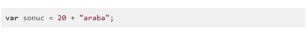
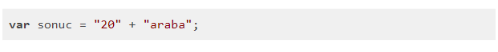
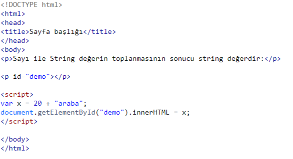
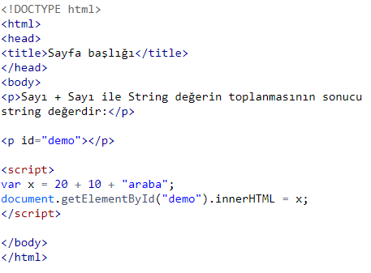
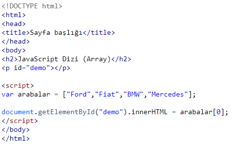
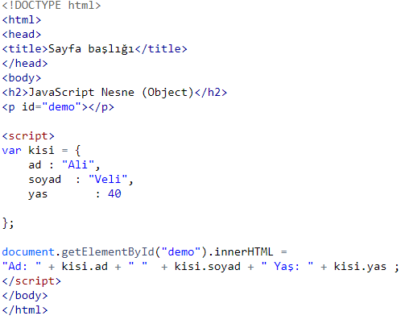
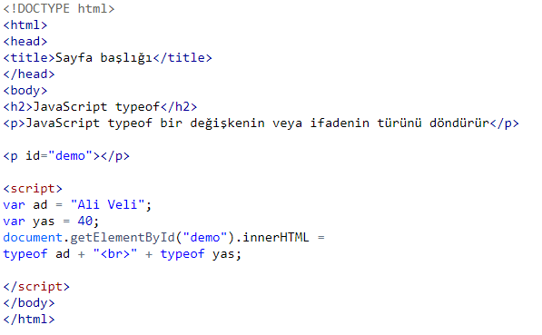
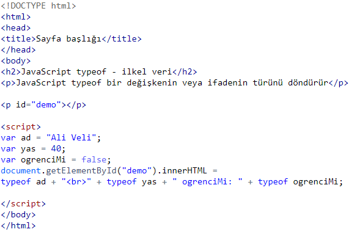
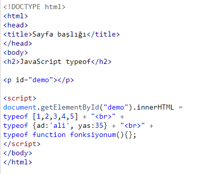

VERİ TÜRLERİ
Veri Türü nedir?
İnsanlardan farklı olarak bilgisayarlar,
1234 ve abcd arasındaki farkı anlayamazlar. Yani hangisi sayı, hangisi metin bunu ayırt edemezler.
Veri türü, değişkenler içinde saklanacak verinin türüne göre sınıflandırılmasıdır.
Veri türleri her programla dili için oldukça önemli bir kavramdır.
Bir uygulama geliştirirken değişken içinde saklanan verinin türünü önceden belirtiriz.
Böylece bilgisayar verinin saklanacağı bellek alanını buna göre ayırır.
JavaScript değişkenleri çok farklı veri türlerini tutabilir.
JavaScript programlama dilinde başlıca veri türleri sayı (number), metin(string) ve nesne (object) türleridir.
Veri Türü Kavramı
Veri türü programlamada önemli bir kavramdır. Sadece JavaScript'e özel bir ifade değildir. Bir değişken üzerinde işlem yaparken onun veri türünü bilmemiz gerekir.Veri türleri olmadan aşağıdaki gibi işlemleri bilgisayar çözemez:
Örnek

Yukarıdaki işlem mantıklı bir işlem değildir. Matematik derslerinde hocaların dediği gibi elma ile armutu toplayamazsınız.
Yukarıdaki işlem hata vermez fakat bir toplama işlemi gerçekleşmez, string birleştirme işlemi gerçekleşir ve sonuç şu şekilde görüntülenir:
20araba
Fakat aşağıdaki işlem, yukarıdaki işleme göre daha farklıdır:
Örnek

Bunun sebebi 20 sayısı "20" şeklinde tırnak içinde yazıldığında bilgisayar bunu artık string olarak kabul eder.
Bir string ile sayının toplanmasının sonucu string değer doğurur:
Örnek

Ekran çıktısı
Sayı ile String değerin toplanmasının sonucu string değerdir:
20araba
JavaScript ifadeleri soldan sağa doğru işletir. Farklı işlemler farklı sonuç üretir:
Örnek

Ekran çıktısı
Sayı + Sayı ile String değerin toplanmasının sonucu string değerdir:
30araba
JavaScript Türleri Dinamiktir
JavaScript dinamik türlerere sahiptir. Bunun anlamı, Aynı JavaScript değişkeni farklı veri türlerini tutabilir.Örnek
var x; // undefinedvar 10; // Şuan veri türü sayı
var Ali; // Şuan veri türü string
Aynı değişkeni farklı ifadelerde farklı veri türlerine dönüştürmek mümkündür.
JavaScript String (Metin)
Bir string harf, sayı gibi karakter bileşenlerinden oluşan türdür. Örneğin "Ali Veli", "Numara13", "abc" birer string türdür.JavaScript programlama dilinde string veri türü tırnak içinde yazılır. Bu tırnak çift veya tek olabilir:
Örnek
var websitesi ="JavaScript.net "var websitesi ='JavaScript.net '
JavaScript Number (Sayı)
-> JavaScript programlama dilinde sadece tek tür sayı vardır.->Bir değişkene sayılsal değer atanıyorsa bu değer tırnak içinde yazılmaz.
->Sayılarda ondalık bölüm nokta ile yazılır:
Örnek
var sayi1=10;var sayi2=99.9;
JavaScript Boolean (Doğru/Yanlış)
Boolean veri türü sadece iki değer alır:true (doğru) ve false (yanlış)var ogrenciMi= true;
var aktifMi=false;
Boolean veri türü genelde koşul ifadelerinde kullanılır. Koşul ifadeleri ile ilgili ilerleyen derslerde daha fazla bilgi verilecektir.
JavaScript Array (Dizi)
Eğer elinizde birbiriyle ilişkili bir grup veri varsa bu verileri Array adı verilen yapılarda saklarız. JavaScript dizi yapıları köşeli parantez ile oluşturulur. Dizinin elemanları virgül ile ayrılır.Aşağıdaki örnek arabalar adında bir dizi oluşturur. Bu dizi 4 elemana sahiptir.
Örnek

Ekran çıktısı
JavaScript Dizi (Array)
FordArray içindeki elemanları saymaya sıfırdan başlarız. Yani Ford dizinin ilk elemanı [1], son elemanı Mercedes markası [3] indeks numarasına sahiptir.
JavaScript Object (Nesne)
JavaScript nesneleri süslü parantez {} ile oluşturulur. Nesnenin özellikleri özellik:değer şeklinde virgül ile ayrılılarak yazılır.Örnek

Ekran çıktısı
JavaScript Nesne (Object)
Ad: Ali Veli Yaş: 40Bu örnekte kisi adında bir nesne oluşturulmuştur. Bu nesnenin 3 özelliği vardır: ad , soyad ,yas
JavaScript typeof Operatörü
JavaScript typeof operatörü JavaScript değişkeninin veri türünü bulmak için kullanılır. typeof operatörü değişkenin türünü döndürür.Örnek

JavaScript typeof
JavaScript typeof bir değişkenin veya ifadenin türünü döndürürstring
number
İlkel Veri (Primitive Data)
Bir veri türü sadece tek bir değer saklıyor ve özellikleri yoksa ilkel veri olarak adlandırılır. typeof operatörü aşağıdaki ilkel veri türlerini döndürür:* string
* number
* boolean
* null
* undefined
Örnek

Ekran çıktısı
JavaScript typeof - ilkel veri
JavaScript typeof bir değişkenin veya ifadenin türünü döndürürstring
number ogrenciMi: boolean
Karmaşık Veri (Complex Data)
JavaScript typeofoperatörü aşağıdaki iki karmaşık türü döndürür:* function
* object
Örnek

Ekran çıktısı
JavaScript typeof
objectobject
function
typeof Array yani dizi için object döndürür. Çünkü array bir nesnedir
JavaScript undefined
JavaScript programlama dilinde, bir değişkene değer atanmazsa, bir değişkenin değeri yoksa undefined olarak ifade edilir.JavaScript typeof operatörü değer atanmamış değişkenler için undefined türünü döndürür.
JavaScript Undefined
Kişi:undefined
Boş Değer
Bir değişkene boş değer atamak mümkündür. Boş değer undefined anlamına gelmez. Boş değerin veri türü string'tir.Örnek
var araba =""; // değişkenin değeri boştur fakat veri türü string'tir.
JavaScript Null
JavaScript'te Null hiçbir şeydir. Null hiç bir değer taşımamasına rağmen türü object yani nesnedir. Null türünü doğrudan kullanmazsınız. Fakat yapılan bazı işlemlerin sonucunda Null değer dönebilir.Örnek olarak, bir veritabanından veri çektiğinizi düşünün. Örneğin numarası 10 olan ögrencinin verilerini çekmek istiyorsunuz. Fakat veritabanında 10 numaralı bir öğrenci yok. İşte bu durumda size dönen değer Null değeridir.
Örnek
var ogrenci = null; //değer null fakat veri türü object, nesnedir.